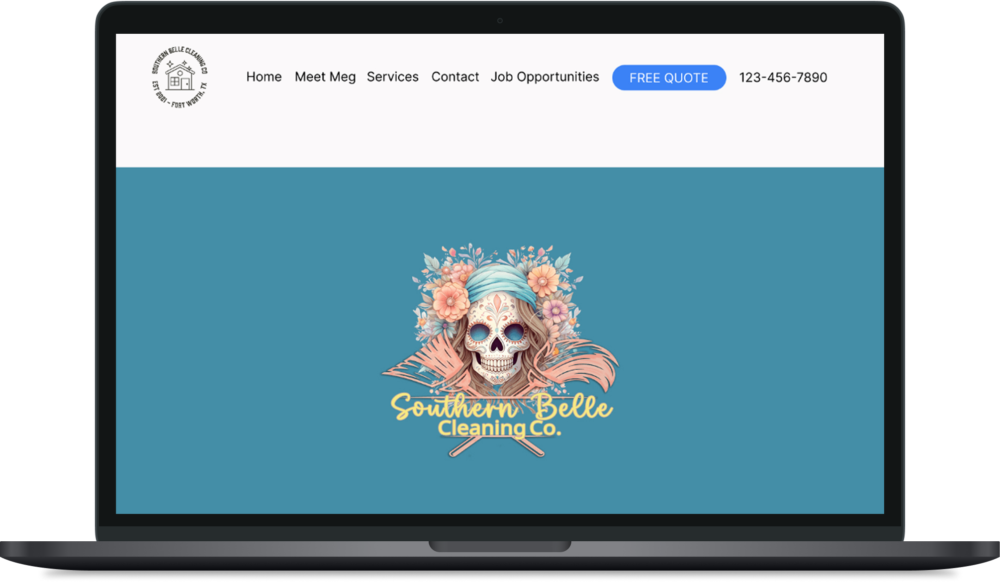
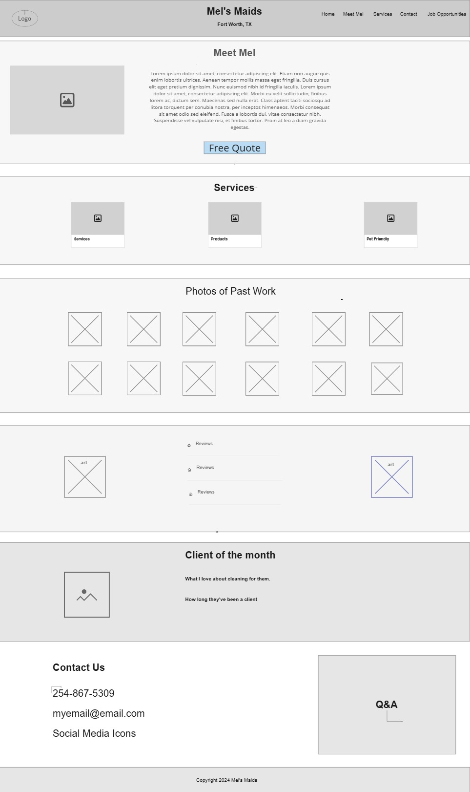
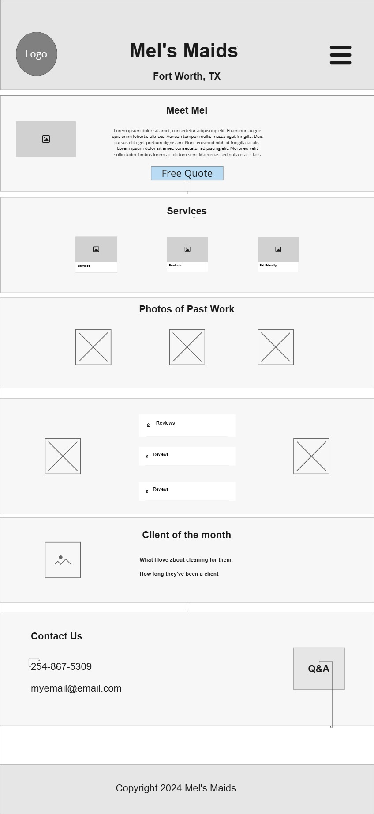

Southern Belle Cleaning Co is a residential cleaning business that relied primarily on word-of-mouth referrals for new customers. While the company had built a loyal customer base over three years, the owner wanted to increase revenue and attract more clients online. The challenge was that potential customers often struggled to contact the business quickly because the owner was actively cleaning homes during business hours and could not always answer incoming calls immediately. Without a professional website or online booking option, the business was missing opportunities to convert interested prospects into paying customers.
Led the end-to-end UX/UI design process, including user research, wireframing, prototyping in Figma, and WordPress development to create a conversion-focused website that increased client leads and revenue.
Southern Belle Cleaning Co relied solely on word-of-mouth referrals and had no website, making it difficult for potential customers to discover the business online. Because the owner was often busy cleaning homes, phone calls frequently went unanswered, resulting in missed leads. The business needed a professional website that would increase online visibility, build credibility, clearly communicate its services, and provide an easy way for customers to request a quote or book a cleaning appointment.
To better understand user expectations, I conducted UX research focused on the home cleaning industry.
Research showed that potential customers primarily wanted:
I created low-fidelity wireframes focused on:
The client approved the wireframes after two rounds of revisions.
Using Figma, I designed a modern, user-friendly interface tailored to the client’s audience.
The interactive prototype went through two rounds of revisions before final approval.
The final website was developed in WordPress to give the client an easy-to-manage platform for future updates.


| First Year (March 10, 2025 - March 10, 2026) | Second Year (March 10, 2026 - July 10, 2026) |
|---|---|
| Total Clicks - 7 | Total Clicks - 6 |
| Total Impressions - 328 | Total Impressions - 289 |
| Average CTR – 2.1% | Average CTR - 2.1% |
| Average Position – 13 | Average Position - 7.7 |
Since launching the website, search performance has continued to improve. Although the second reporting period covers only four months, the site generated nearly as many impressions (289 vs. 328) and clicks (6 vs. 7) as it did during the entire previous year. The average search position improved significantly from 13 to 7.7, moving the website onto the first page of Google for more searches. While the click-through rate remained steady at 2.1%, the improved rankings indicate stronger visibility and increased opportunities for attracting qualified local traffic.
| First Year (March 10, 2025 - March 10, 2026) | Second Year (March 10, 2026 - July 10, 2026) |
|---|---|
| Engagement Rate – 32.1% | Engagement Rate - 24.5% |
| Average Engagement Time - 32 sec | Average Engagement Time – 17 sec |
| Pages Per Session (Views Per User) – 1.3 | Pages Per Session (Views Per User) - 1.2 |
| Returning Users - 11 | Returning Users - 1 |
Google Analytics showed that visitors continued engaging with the website after launch. During the first year, users had a 32.1% engagement rate, spent an average of 32 seconds on the site, and viewed 1.3 pages per session. In the second reporting period (four months), the engagement rate was 24.5%, with an average engagement time of 17 seconds and 1.2 pages per session. While engagement metrics declined slightly, they remained relatively consistent. Because the second period covers only four months, it also recorded fewer returning users. Combined with the improved Google Search rankings, these results indicate the website continued attracting visitors and generating opportunities for new customer inquiries.
Following the successful launch, I continued providing digital marketing and SEO services for one year to improve search visibility, monitor website performance, and support the client's long-term growth.